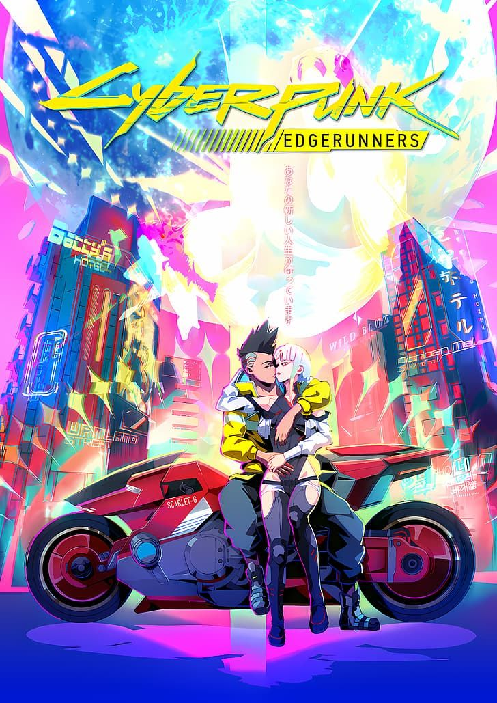
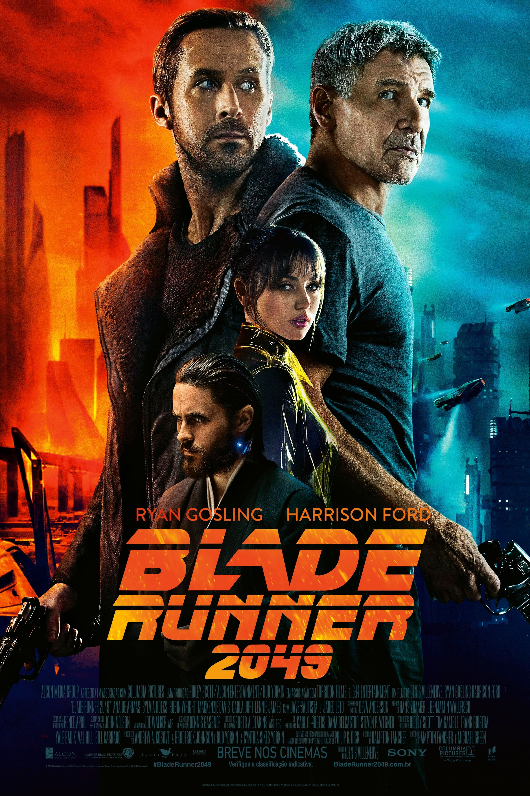
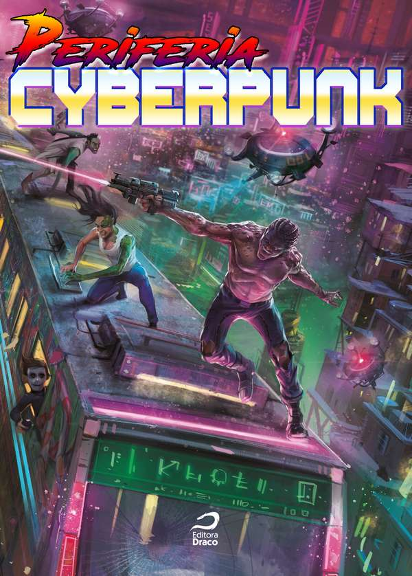
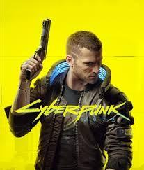
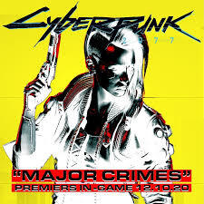

Guia de Recomendações Cyberpunk
Animes

Os animes cyberpunk exploram futuros distópicos, tecnologia avançada e dilemas humanos.
- Ghost in the Shell
- Akira
- Psycho-Pass
- Akira
- Ghost in the Shell
- Serial Experiments Lain
- Ergo Proxy
- Psycho-Pass
Ver Ghost in the Shell
Filmes

Filmes cyberpunk são conhecidos por seus visuais neon e críticas sociais profundas.
- Blade Runner
- Matrix
- Alita: Anjo de Combate
- Blade Runner
- Matrix
- Akira (anime)
- Ghost in the Shell (anime)
- Dredd
Mais sobre Blade Runner
HQs

As HQs cyberpunk trazem universos ricos em tecnologia e conflitos sociais.
- Transmetropolitan
- Akira (mangá)
- The Private Eye
- Transmetropolitan
- Akira (mangá)
- The Private Eye
- Tokyo Ghost
- Descender
Saiba mais sobre Transmetropolitan
Jogos

Jogos cyberpunk mergulham o jogador em mundos futuristas cheios de ação e escolhas morais.
- Cyberpunk 2077
- Deus Ex: Human Revolution
- System Shock 2
- Cyberpunk 2077
- Deus Ex: Human Revolution
- System Shock 2
- Observer
- Ruiner
Site oficial Cyberpunk 2077
Outros

Cursos, músicas e outras mídias também exploram o universo cyberpunk.
- Synthwave (música)
- Curso "Introdução ao Cyberpunk"
- Palestras TED sobre IA e futuro
- Synthwave Essentials (Spotify)
- Palestra TED: "O Futuro da IA"
- Curso Udemy: "Cyberpunk Culture"
- Painel Comic Con: Cyberpunk no Cinema
- Música: Kavinsky - Nightcall
Ouça Synthwave no Spotify
| Categoria |
Recomendação Top 1 |
Destaque Visual/Sonoro |
| Nome | Ano/Lançamento |
| Animes | Akira (1988) | Visual marcante, trilha synthwave |
| Filmes | Blade Runner (1982) |
| HQs | The Private Eye | 2013-2015 | Narrativa visual inovadora |
| Jogos | Cyberpunk 2077 | 2020 | Cidade neon, trilha imersiva |
| Outros | Synthwave Essentials (Spotify) | - | Música eletrônica futurista |
Voltar ao topo